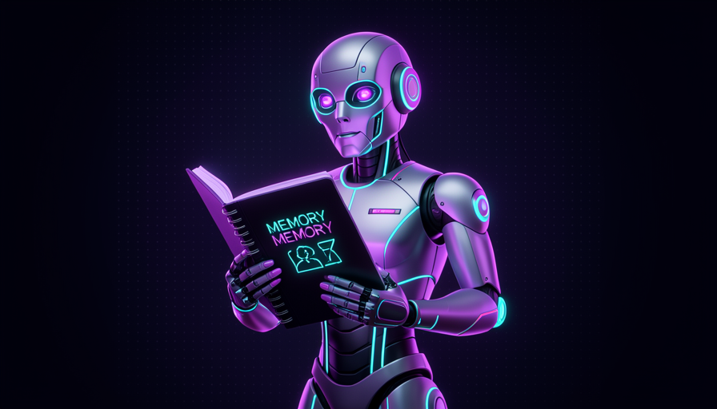
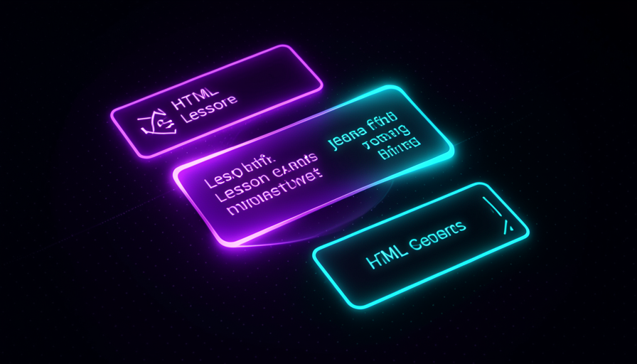
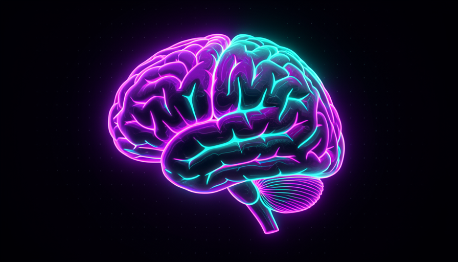

📖 Living glossary (read first — come back whenever you need to)
This module introduces the vocabulary of skills with memory. Learn these terms—they come up throughout the module:
mission.md, the learning record, the lessons). It’s the student’s notebook.🧠 Stateful × stateless
🧠 Imagine it this way: two teachers. The first gives you a perfect lesson and, the next day, has no idea who you are—they start from scratch every time. The second has a notebook about you: it knows what you've already learned, where you got stuck, and what's next. The second teacher is stateful. It’s the one the Teach skill imitates.
Most of the skills you’ve seen so far are stateless — no memory. For example, grill-me interviews you, reaches an understanding, and that’s it; next time, it starts from scratch. That’s great for one-off tasks. But teach is different: nobody learns from scratch in every lesson. That’s why the Teach skill is stateful — it stores state in a workspace (a working folder) to remember what you did.
In Pocock's words, the Teach skill "it runs in a workspace — it saves state there". This is the module’s technical key: “remembering” isn’t model magic (the model forgets everything at the end of each conversation); it’s file saved to disk. The skill writes down what it learned about you, and in the next session reads these files back. Common mistake: thinking the agent "remembers" on its own. It doesn't — without saved state, there's no memory. What the Teach skill does especially well is turn memory into files that survive a conversation reset.
On the left, isolated sessions (stateless). On the right, everything reads and writes to the same workspace — that’s why the Teach skill remembers.

⚠️ Common beginner mistake
Confuse the conversation context (that the model “remembers” only while the window is open) with saved state. When you reset the conversation, the context disappears — only what’s in file survives. Stateful = file on disk, not model memory.
In one sentence: stateless forgets with each session; stateful saves files and remembers — and teaching requires remembering.
Going deeper (optional): should every skill be stateful?
No. State has a cost: the skill needs a folder, rules for where to save things, and care to avoid “remembering” the wrong thing. Most skills are stateless on purpose — simpler and more predictable. State is only worthwhile when the task continues over time: teaching, tracking a long-running project, keeping a decision journal. Pocock contrasts Teach (stateful) precisely with skills like grill-me (stateless), which don’t need local state.
🎯 The mission.md
🧠 Imagine it this way: a good personal trainer doesn't ask "which exercise do you want to do?" They ask "where do you want to end up?". If you say “I want to run a marathon,” it builds everything from that. The mission.md is this conversation, written in a file.
Before teaching anything, the Teach skill does something counterintuitive: it doesn't ask about the topic. It asks about your mission. Pocock describes the demo: a vibe coder wants to “fill in the gaps.” His prompt is simple, in plain English, describing the mission (what you want to achieve), not the subject matter. In his words: "talking to a teacher; the agent is my teacher." The skill then aligns with what you want and creates the mission.md.
O mission.md has four key questions: who you are, what you want to build, why it matters e what success looks like. Pocock gives examples of questions the skill asks: “what are you building?”, “what ship better software mean to you?", "what’s the concrete project?" Behind this is a strong definition of teaching: "teaching = not getting info into your head but orienting you in the world" — teaching isn't dumping information into your head; it's helping you guide you through the world. That’s why the mission comes before the subject matter: without knowing where you’re going, every lesson is generic.
Below is a mission.md for example, in the format the Teach skill would produce for this same vibe coder. Notice how short and concrete it is—it's the "north star" that will guide every lesson. Copy and adapt yours:
# Mission ## Quem sou Monto apps com IA ha 6 meses (vibe coder). Sei pedir features, mas nao domino os fundamentos por baixo. ## O que quero construir Um SaaS de agendamento pra barbearias. Ja tenho o front no ar, mas quebro o backend toda vez que mexo nele. ## Por que importa Quero parar de depender 100% da IA e conseguir consertar meu proprio codigo quando ele quebra. "Ship better software" = entregar sem medo de quebrar o que ja funciona. ## Como e o sucesso - Entendo git o bastante pra desfazer um erro com confianca - Sei ler uma mensagem de erro e achar a causa sozinho - Escrevo 1 teste que pega uma regressao antes do deploy ## Ponto de partida (a skill preenche) - Maquina: macOS, git instalado, Node 20 - Conhecido: HTML/CSS basico, prompts; Lacunas: git, debugging, testes
Quick recall: why does the Teach skill ask about the mission before the topic?
In one sentence: mission.md captures where you want to go—because teaching means guiding, not dumping information.
📒 The learning record
🧠 Imagine it this way: a child's health record. No doctor memorizes every patient — they open the record and see the history: what they've already had, what's still due, any allergies. The learning record is your learning notebook.
If the mission.md é o destination, o learning record é o trip journal. Pocock lists what he keeps: the mission, o starting point, the decisions outlets and the estimates (how much is left, what comes next). At the start of each session, the skill reads this file to answer the question “where did we leave off?” Without it, the skill would be just another stateless one—it would give the same introductory lesson forever.
Where does the Teach skill begin, according to the demo? It is customized: has already checked your machine’s setup (whether git is installed, for example) and uses that to decide where to start. For the vibe coder, it starts with git (the “undo button”), then read errors, debugging, how software is delivered e tests. Each of these steps becomes a decision recorded in the learning record. Why this matters: the record turns a generic teacher into a teacher your — that knows you’ve already covered git and that the next lesson is debugging.

🔬 Worked example: the vibe coder’s 2nd session
See how saved state changes everything between yesterday's session and today's:
No learning record (stateless)
Today: "Hi! Want to learn programming? Do you already use git?" → repeats yesterday’s introduction. You relive the same lesson and waste time.
With a learning record (stateful)
Today: the skill reads the record → "Yesterday you finished git e read errors. Today we tackle debugging in your barbershop SaaS." → pick up where you left off.
In one sentence: the learning record is the notebook that answers “where did we leave off?”—it’s what makes the skill yours.
🖥️ HTML Lessons
🧠 Imagine it this way: the difference between getting a recipe scribbled on a piece of paper and opening an illustrated cookbook with photos and numbered steps. The content may be the same — but the second teaches you much better. The Teach skill chooses the "illustrated book."
The Teach skill doesn’t dump the lesson into the terminal. It creates a reference cheat sheet (a reference "cheat sheet") and the first lesson in HTML, which opens in the browser. Why? Because, in Pocock’s words, the HTML is "richer than the terminal" — supports headings, images, colors, and highlighted code blocks. It’s the same logic that makes this use HTML for the course instead of a text file: you read better, remember better.
And there's a second ingredient: the lesson is customized. The skill has already checked your machine's setup — so it won't tell you to "install git" if git is already installed. Inside the lessons there are quizzes e real exercises in the terminal. Pocock is emphatic about quizzes: "quizzes are unreasonably effective" — they increase the storage strength (retrieval strength). Instead of just reading, you’re forced to recover what it learned—and recovering is what makes it stick. Common mistake: thinking that "reading it again" is enough; real retention comes from being tested. You'll see the theory behind this in module 3.4.

Going deeper (optional): why do quizzes work so well?
It’s called testing effect (test effect): the act of recover a piece of information from memory strengthens it much more than simply reviewing it. Rereading gives you the illusion that you know; being tested reveals gaps and, at the same time, encodes the answer more strongly. That’s why the Teach skill alternates quizzes with each lesson—and why this course has “quick recall” buttons at the end of topics. More about the theory (ZPD, recall, spaced repetition) in module 3.4.
In one sentence: lessons in HTML (richer than the terminal) + quizzes that force recall = lessons that really stick.
💾 Local state that remembers
🧠 Imagine it this way: A game that saves your progress in a “save file.” You close the game, come back weeks later, load the save — and you’re exactly where you left off. The Teach skill workspace is that save file.
Putting it all together: the local state The Teach skill lives in a workspace and consists of three pieces you already know—the mission.md (the destination), the learning record (the journal), and the lessons in HTML already generated. Pocock sums up the cycle: the skill tells you to read the primary source (in the case of Git, the Pro Git book), invites you to ask questions e a create the next lesson. Each of these actions updates the state — the save file grows with every session.
Here's the definition that wraps up the module, straight from Pocock: "stateful skill (remembers what you did) × stateless (doesn't need local state)." The Teach skill is the rare case where it’s worth loading state, because the learning is continuous — doesn't fit in one session. An implementation detail that matters: how the skill is agent-agnostic, this state in files makes it work in Claude Code, Codex, and similar tools (you install it with npx skills latest add and choose the teach skill—we’ll see it in module 3.6). The state lives in your disk, not tied to a tool.
In one sentence: mission + record + lessons form a save file on your disk — that’s what makes the Teach skill stateful and portable.
🛠️ Recreate the concept
🧠 Imagine it this way: you don't need to buy the bicycle factory to get a bike — you learn how it's assembled and build your own. The concept behind the Teach skill is simple enough for you to re-create a version of yourself.
Wrapping up: the Teach skill isn’t magic—it’s a pattern. Pocock says he learned the Rubik’s Cube with it and can solve it from memory; he calls it "extremely effective". But what makes it good isn’t the model: it’s the stateful skill pattern. And you can reuse this pattern for any ongoing learning: a workspace + mission.md (destination) + learning record (journal) + rich lessons with quizzes. By the way, Pocock offers a direct tip along these lines: when fixing recurring bugs, ask the agent to generate “teach skill”-style HTML with the patterns in your errors. The concept travels. Use the outline below to build your version:
Voce e meu professor. Trabalhe num workspace e SALVE estado lah. 1) ALINHE A MISSAO (nao o assunto). Pergunte uma de cada vez: - quem sou eu? o que quero construir? por que importa? - como e o sucesso? -> escreva ./workspace/mission.md 2) CHEQUE MEU SETUP (git instalado? linguagem? SO) e registre. 3) MANTENHA UM LEARNING RECORD em ./workspace/record.md: missao, ponto de partida, decisoes, o que vem depois. 4) ENSINE EM LICOES HTML (abrem no navegador, mais ricas que terminal): - personalizadas pro meu setup - com exercicios reais no terminal - 1 quiz por licao (recall > releitura) - aponte a FONTE PRIMARIA pra eu ler 5) AO FIM: convide perguntas + crie a proxima licao + atualize o record. Regra: voce ESQUECE entre sessoes; so o que estiver em arquivo sobrevive.
Quick recall: what makes the Teach skill stateful, in practice?
In one sentence: the Teach skill is a pattern (workspace + mission + record + lessons) that you can recreate for any ongoing learning.
🧾 Module Summary
Next module:
3.4 — Teaching that sticks: the theory behind the Teach skill (zone of proximal development, knowledge as a graph, recall, and spaced repetition).